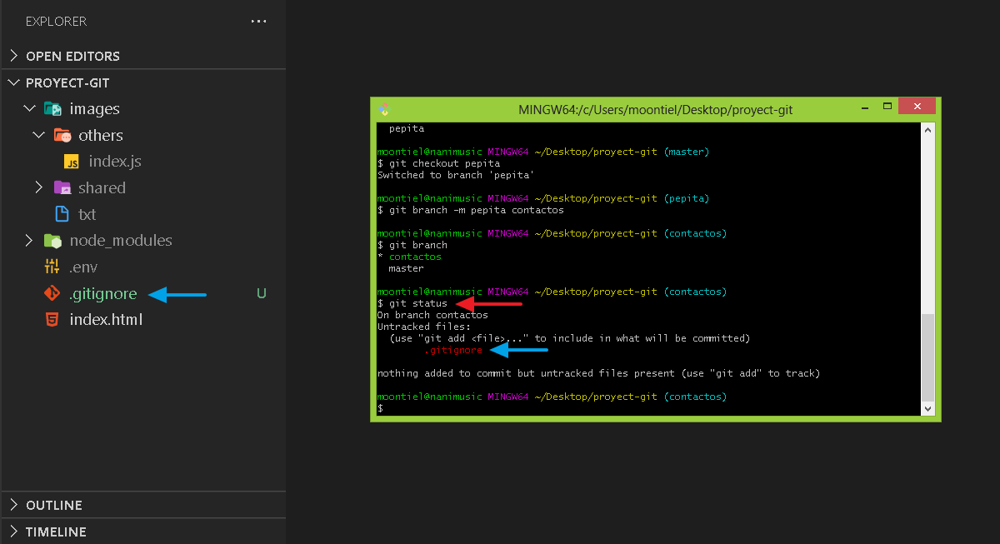

05. Git ignore
Hay archivos que no dedemos subir a nuestro repositorio git y github ya que contienen informacion importante sobre nuestro proyecto para esto hacemos uso de gitignore que nos permite ocultar estos archivos para que no sean tomados en cuenta a la hora de ser subidos.
01. Creando el archivo .gitignore
02. Archivos ignorados
03. Validando los archivos ignorados

End git ignore